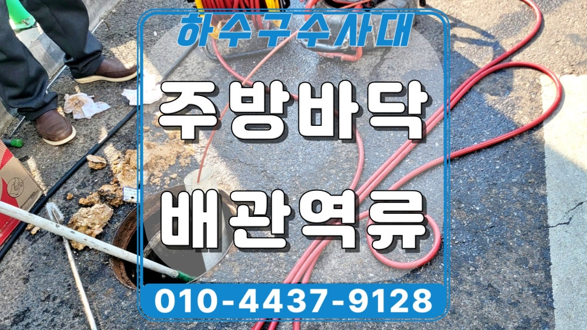
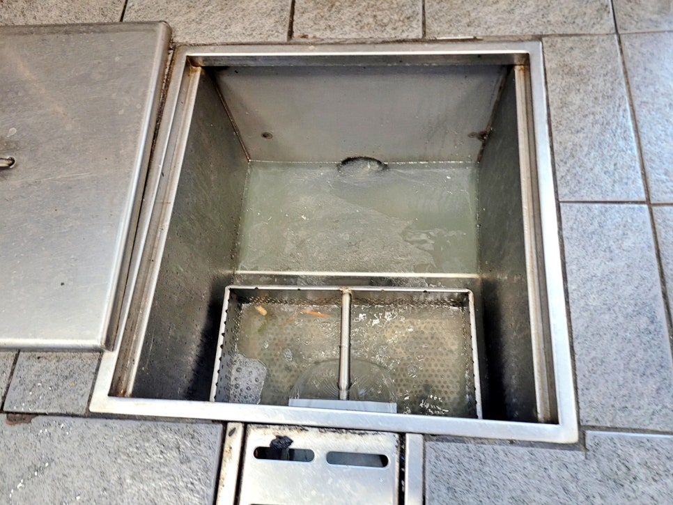
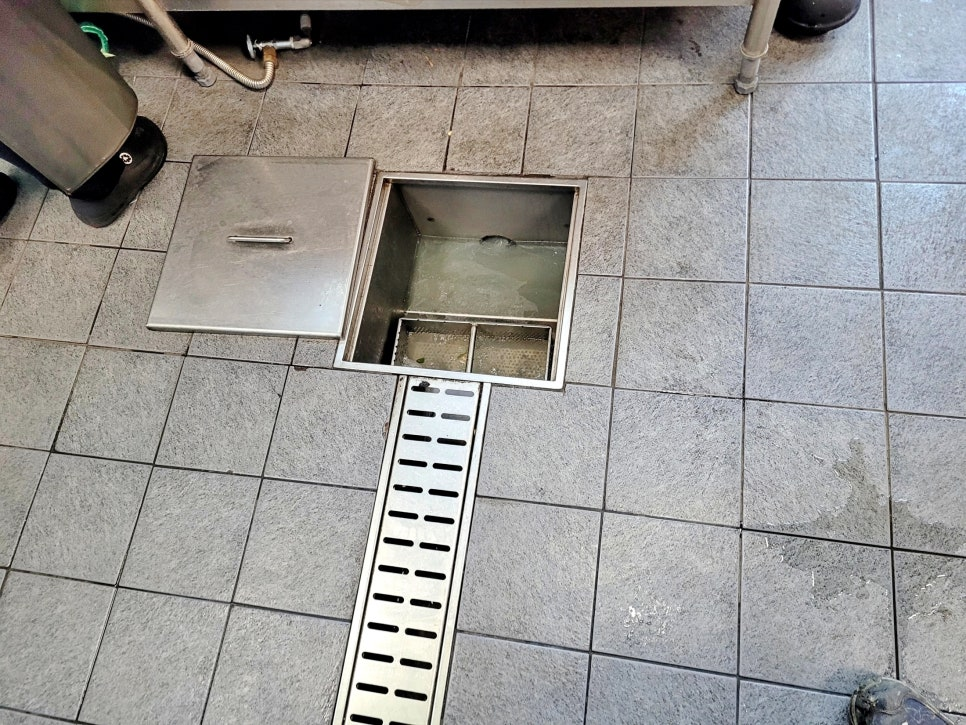
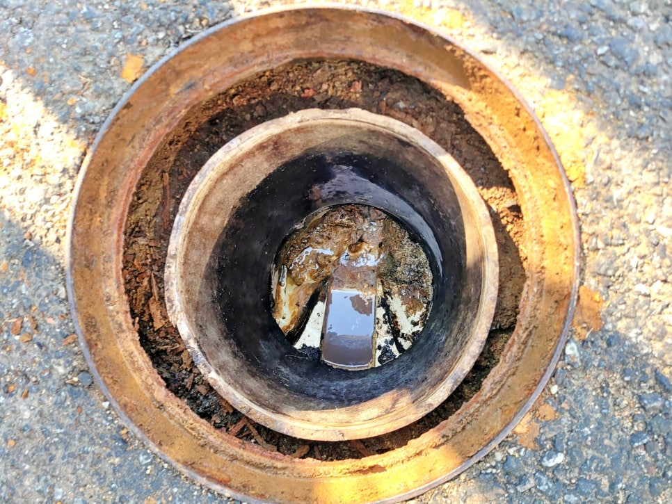
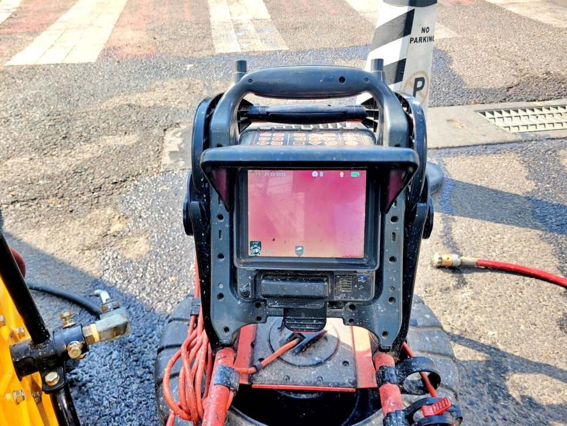
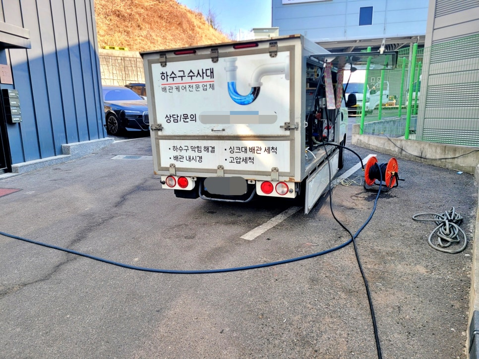
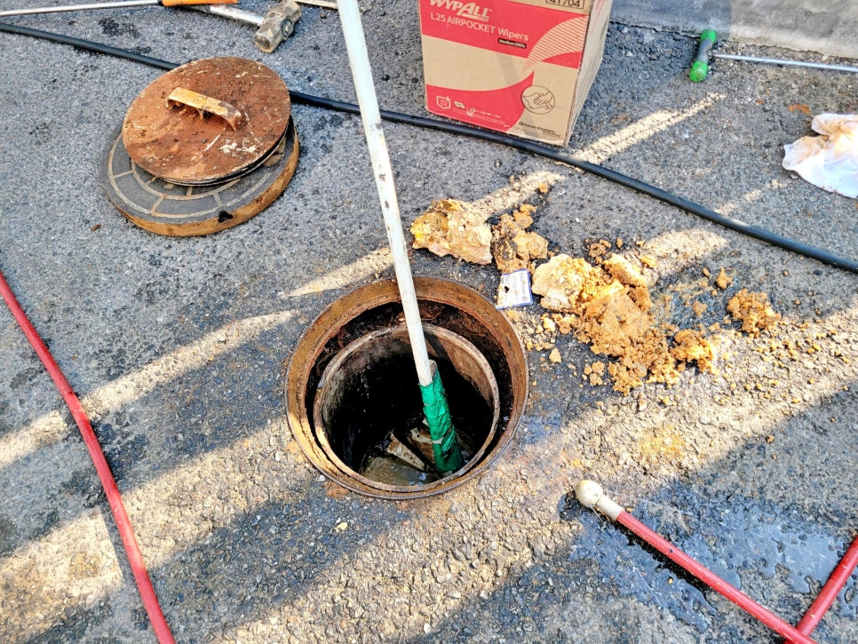

🏠 동탄 장지동 식당 하수구막힘, 고압세척으로 막힌 배관 뚫어드림
화성 장지동 하수구막힘 전문 시공 후기

📋 작업 개요
- 위치: 화성 장지동, 장지동, 화성
- 서비스 유형: 하수구막힘, 배관막힘, 맨홀막힘, 집수정막힘, 역류해결, 뚫는업체, 배관청소, 고압세척
- 작업 일시: 2026. 3. 9. 19:35
- 업체명: 하수구수사대 (010-5615-2118)
🔍 문제 상황
동탄 장지동 식당 주방 하수구막힘,
고압세척으로 막힌 배관 잘 뚫는업체
추천합니다.
안녕하세요?
화성 동탄 장지동 식당 하수구막힘
배관청소업체 하수구수사대입니다.
오늘 소개할 현장 후기는
동탄 장지동에 한 식당 주방에서
바닥 집수정이 역류해 물을 제대로
사용할 수 없다는 대표님의 연락을
받고 긴급 출동한 사례인데요.
동탄 장지동 식당 하수구막힘 현장
동탄 장지동 식당 하수구막힘 현장에
도착해 집수정 상태를 살펴보니
위 화면과 같이 출수구로 물이 전혀
빠지지 못한 채 내부가 차오르고
있었습니다.
얼마 후 점심 식사를 준비해야하는
상황에서 신속하게 원인을 찾아
확실하게 뚫어줘야 했는데요.
과연 저희가 이 문제를 어떻게
해결해 드렸는지 지금부터 상세히
소개하겠습니다.
1. 동탄 장지동 식당 하수구막힘 원인은 기름

🔎 원인 분석
💡 전문가 진단: 동탄 장지동 식당 주방 하수구막힘,고압세척으로 막힌 배관 잘 뚫는업체추천합니다.
외부 오수 받이 맨홀 모습
관계자분 말씀으로는 얼마 전에도
비슷한 현상으로 다른 하수구 업체가
방문해 샤프트 작업으로 뚫었지만
한 달 만에 다시 역류가 시작됐다고
하셨는데요.
바로 외부 오수 받이 맨홀을 열어
배관 흐름을 점검해 보니 외부로
나가는 출수구와 건물 내부에서
이어지는 하수관 모두 기름때로
막혀 있었습니다.
내시경 카메라를 통해서 초입부터
기름 슬러지와 찌꺼기가 두껍게
달라붙은 모습이 보였는데요.
이 상태라면 샤프트 작업만으로는
잠깐 뚫렸다가 다시 막힐 확률이
매우 높은 현장이었습니다.
그래서
대표님께 샤프트로 임시 통수는
가능하지만 오래 가지 않고, 배관
내벽까지 제대로 청소하려면
고압세척이 필요하다고 설명드렸고요.
대표님께서는 저희 설명을 자세히
들으신 뒤, 이번에는 확실하게

🔧 작업 과정
고압세척 청소로 처리해 달라고
요청하셨습니다.
동탄 장지동 고압세척 청소 장면
먼저 외부 출수구 방향으로 1차
고압세척을 진행했는데요.
화성 동탄 식당 하수구막힘 구간에
세척을 시작하자 안쪽에 붙어 있던
기름 덩어리들이 한꺼번에 쏟아져
나왔고 뜰채로 건져낼 정도로 정말
많은 양이 밀려 내려왔습니다.
이후 2차로 건물 주방 방향 30m
이상의 하수관에 고압세척 청소를
실시했는데요.
이 구간에서도 묵은 기름 찌꺼기가
계속 배출됐고, 옆에서 지켜보시던
대표님께서도 지난번 샤프트 통수
작업만으로는 한계가 있었다는 점을
확실히 체감하셨습니다.
동탄 장지동 식당 하수구막힘 배관
청소를 마친 뒤 다시 주방으로 들어가
집수정 상태를 살펴봤는데요.
막힌 곳이 뚫린 이후 집수정 모습
가득 차 있던 물이 정상적으로
배수되는 모습을 확인할 수 있었으며,
이어서 배수 테스트까지 진행해 막힘
없이 시원스럽게 통수되는 모습을 식당
대표님과 오랜 시간 지켜봤습니다.
2. 오늘의 작업 후기를 마치며
오수 맨홀 바닥 기름을 뜰채로 건져낸 모습
오늘 소개한 장지동 식당 하수구막힘
원인은 다른 곳과 마찮가지로 기름이
배관 내부에 쌓여서 발생한 것이고요.
현장 주변 청소까지 깔끔하게 마침
이처럼 식당 주방 하수구는 기름 성분이
계속 유입되기 때문에 막힘이 반복되기
쉬워서, 이럴수록 일시적인 작업보다
고압세척으로 내벽까지 관리하는 것이
훨씬 중요하다고 생각합니다.
참고로


✅ 작업 완료
대표님께서도 앞으로는 정기적인 배관
관리를 저희 '하수구수사대'에 맡기기로
오늘 후기를 보신 분들 중에 이와같은
문제로 불편함을 겪고 있다면 바로
하수구수사대를 불러 주십시오.
이상으로
"동탄 장지동 식당 주방 하수구막힘
고압세척 청소"후기를 마치겠습니다.
감사합니다.
#화성동탄하수구업체 #화성동탄하수구청소업체 #동탄식당하수구막힘 #동탄하수구고압청소업체 #동탄하수구청소 #동탄장지동하수구업체 #동탄장지동배관청소




⚠️ 하수구 배관 막힘 예방 및 관리 가이드
- ✅ 머리카락, 비닐, 물티슈 등 물에 분해되지 않는 이물질은 하수구 유입을 절대 금지해 주세요.
- ✅ 하수구 거름망을 씌우고 모여진 이물질은 주기적으로 쓰레기통에 바로 비워주셔야 합니다.
- ✅ 배관 노후가 심할 경우 이물질이 더 쉽게 걸리므로 주기적인 배관 세척(고압세척 등)을 권장합니다.
- ✅ 작업 후 1년 이내 재발 시 하수구수사대에서 무상 A/S 보증 서비스를 제공합니다.
💡 핵심 정리
- 확실한 장비 작업(내시경 점검 및 샤프트 스케일링)으로 원인을 뿌리 뽑습니다.
- 작업 후 1년 이내에 동일한 부위 재발 시 100% 무상 A/S 서비스를 보장합니다.
- 서울 · 경기 · 인천 전 지역에 24시간 언제든 긴급 출동할 수 있도록 항시 대기 중입니다.
❓ 자주 묻는 질문 (FAQ)
🚨 화성 장지동 하수구막힘 문제로 고민이신가요?
정확한 원인 진단과 확실한 시공으로 재발 없는 해결을 약속드립니다.
24시간 긴급 출동 | 서울 · 경기 · 인천 전지역 | 1년 내 재발 시 무상 A/S